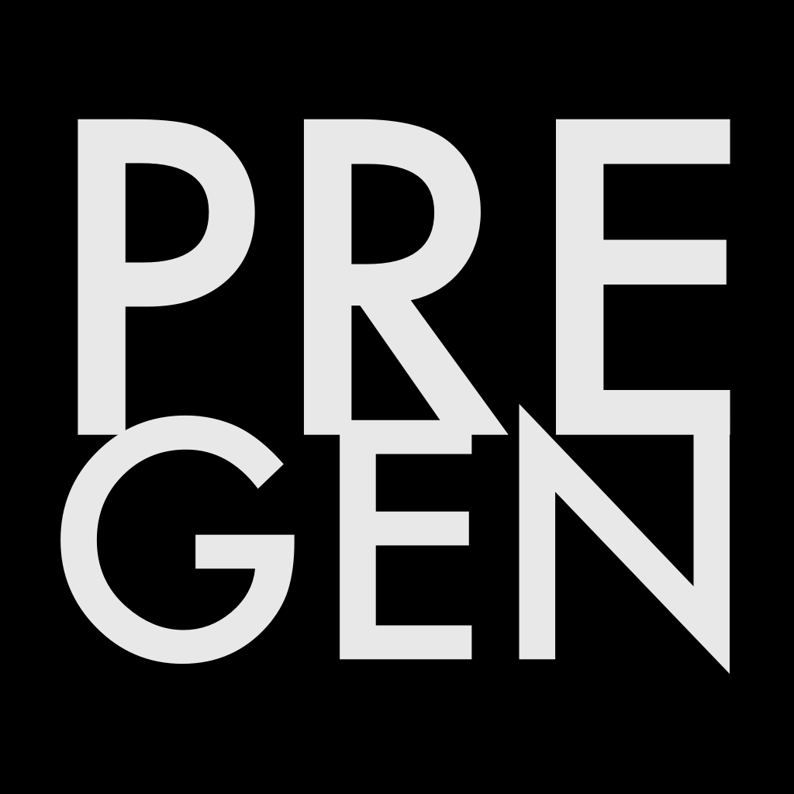

Pre-Generative Authorization Protocol — Technical Specification
Independent Researcher
ORCID: 0009-0000-2599-0547
{{DOI_LINE}}
{{VER_LINE}}
Takedowns, lawsuits and provenance records act after content is generated. Published permission declarations say what a rights holder allows in general, not whether one specific request is covered. Generative systems meanwhile depict or embody people, voices, characters and works on demand.
I present PRE-GEN (PG), an open protocol of pre-generation authorization: before a generative system produces an output that uses a protected subject, it asks the registry that speaks for the subject, and the registry answers with a signature anyone can check offline. Version 5 reduces the protocol to a one-page core of five rules — a code names the subject and its registry; a signed directory says whom to trust; the provider asks; the registry returns a signed answer bound to the exact request; the provider generates only on a valid allow and keeps it as its proof. Everything else is an optional extension that may only add: reports, provider keys, usage limits, multi-subject jobs, signed grants, connected end users, a trial mode, a sandbox, public lookup, identity across registries, proof carried with the output, and a catalog for resale. A profile, likeness/1, defines what a person's likeness and voice may be used for and which refusals nothing can override. Two further results address the hardest abuse cases: a rule for one person claimed by several registries — the claim confirmed on the person's own channel decides, never the earlier one, and unproven conflicts freeze — and a proof bundle a platform can verify against the very file. PRE-GEN proves who permitted what, and when; it does not decide what is lawful and binds only systems that choose to ask. The specification, JSON Schemas, byte vectors, verification libraries and a reference registry are published under Apache-2.0.
Keywords: pre-generation authorization, signed permission, likeness and voice rights, registries, PG codes, provenance, C2PA, pre-gen
A generative model can produce a recognisable person, a cloned voice or a familiar character from one prompt. The tools that exist act on content once it exists: takedown requests, platform likeness claims, lawsuits, and provenance manifests that say who made a file [3]. Machine-readable permission standards publish what a rights holder allows in general [8][9]. None gives a provider, at the moment it is about to generate, a signed answer to its exact request that a third party can verify later.
PRE-GEN fills that gap. Its scope in version 5 is the person: likeness and voice, through the profile likeness/1 (§9). Works, characters and brands are later profiles; the core does not change for them. PRE-GEN carries and proves decisions made by those entitled to make them. It classifies no content, decides nothing about legality, and cannot bind a system that never asks (§13).
Three developments make the question practical in 2026. The EU AI Act requires providers to mark generated content in a machine-readable form and deployers to disclose deepfakes from 2 August 2026 [10]; a permission record can travel in the same manifest. Platforms now detect a person's likeness in uploaded videos and accept explicit permission as a ground to dispute a likeness claim [11]. And single-company licensing marketplaces for celebrity voices have appeared [12], showing demand for licensed use while leaving each person to manage many separate gardens.
Every version of PRE-GEN keeps five commitments; formats and details may change, these may not.
| # | Commitment |
|---|---|
| 1 | Permission is checked before generation, not after. Only a valid answer issued before an output was made can permit it. A later report records what happened and never grants anything. |
| 2 | Those entitled to decide, decide. The rights holder decides through the registry that holds the subject. PRE-GEN carries and proves that decision. |
| 3 | Every answer is signed and can be checked by anyone, offline, bound to the exact request, without trusting whoever shows it. |
| 4 | Open to every registry on the same terms, including the first. |
| 5 | Floors only go up. No licence, extension or policy turns a required refusal — an opt-out, a protection of minors, an immutable denial — into a permission. |
PRE-GEN was first published as Prompt Protocol version 1 on 12 May 2026 [7].
Earlier versions grew one large specification. Version 5 separates three things. The core (PRE-GEN-CORE.md) is what every provider, registry and verifier implements; a provider that implements exactly the core implements PRE-GEN. Extensions each solve one problem on one page, are optional, and only add: no extension may turn a refusal the core or a profile requires into a permission. A profile says what a request's use contains, which reasons and obligations exist, and which refusals no grant can override; the core knows nothing about faces or licences. A party declares the profiles and extensions it supports in its registry document; a client sends members of an extension only to a registry that declares it, and treats any unknown refusal reason as a refusal.
No intermediary is required. A provider and a registry exchange requests and answers directly; services that make this easier — verifying a representative's authority, running a sale, reporting, settlement — are optional and may be offered by anyone.
| Rule | Content |
|---|---|
| 1. A code names the subject and its registry | A PG code has the form PG-<prefix>-<number><check>, e.g. PG-TEST-000001N, in an unambiguous alphabet in the spirit of Crockford's Base32 [5] with a mod-37 check character. The four-letter prefix names the registry; software may read the prefix and nothing else from a code. Codes without a prefix were issued before v5 by the first registry; they keep their meaning forever and no registry issues new ones. |
| 2. The directory says whom to trust | One directory signed by the steward key maps each prefix to a registry's address and keys (§5). A verifier accepts a registry's signature only for the prefix the directory gives it. |
| 3. Ask | The provider sends POST {api}/v2/requests with one unsigned pg.request.v1 envelope about one subject: subject_ref, provider_id, profile, use, job_id and job_hash, the provider's fingerprint of the job. The prompt and the output never leave the provider. |
| 4. A signed answer | The registry returns a pg.answer.v1 envelope signed by its key: request_id, profile, status, issued_at, expires_at. The status is allow (with a basis: a policy rule or a grant), deny, review or not_blocked (each with a reason). Only allow permits. An answer lives 1 to 900 seconds. |
| 5. Generate only on a valid allow, and keep it | A provider generates only when every subject of the job has an allow valid at that moment, and keeps the answers with the output as its proof. An output made without a valid allow is never presented as permitted. |
A valid answer verifies with a key the directory lists for the subject's prefix and that is not revoked; its request_id is the id of the request sent; its profile is the one asked for; it was issued no more than 60 seconds in the future and has not expired. A refusal about the subject is a signed answer, not an HTTP error; errors (PG_MALFORMED, PG_NOT_AUTHENTICATED, PG_PROFILE_UNSUPPORTED) concern the request itself. Two reasons are not prohibitions: PG_UNKNOWN_SUBJECT and PG_OTHER_REGISTRY.
Every message is an envelope {type, body, signatures}. The body's signers list names each signer's role and key id, and signatures follow in the same order.
| Element | Rule |
|---|---|
| Canonical JSON | UTF-8; members sorted by key in code-point order; no whitespace; only ", \ and control characters escaped; no Unicode normalisation; numbers are integers within ±(253−1); times are Unix seconds. |
| Signing input | "PREGEN-V5" ‖ 0x00 ‖ type ‖ 0x00 ‖ canonical(body), signed with Ed25519 [1]. |
| Message id | SHA-256 of "PREGEN-V5-ID" ‖ 0x00 ‖ type ‖ 0x00 ‖ canonical(body). Signatures are not part of it, so a request's id is known before it is answered. |
| Key id | pg-ed25519: followed by the first 32 hex characters of SHA-256 of the raw public key. |
| Unknown members | Rejected unless defined by the profile or a declared extension; critical lists extensions a receiver must understand. |
The type is part of what is signed, so a signature over one kind of message can never be replayed as another. Each registry publishes its keys at GET {api}/keys and a document at /.well-known/pregen-registry.json listing its prefix, profiles, extensions, policy and a contact for complaints. JSON Schemas (2020-12) [4] fix every message; byte vectors fix every signature and id [7].
Anyone can print a PG code and anyone can sign. What PRE-GEN controls is which signatures conforming software accepts: one namespace, one registry, one set of keys. The directory, published at https://www.pregen.org/registries.json, is signed by the steward key, whose public value is built into the verification libraries and published in the paper, the repository and DNS (_pregen-steward.pregen.org). A verifier accepts a directory only with that signature and with a sequence number no lower than one it has already seen, and refuses one that removes a listed namespace, key or revocation — an append-only public record in the spirit of Certificate Transparency [2].
| Key | Fingerprint | Public key |
|---|---|---|
| Steward | pg-ed25519:dcdd244659e6d0e2426f2b504cb11590 | 5cb949aab04186e3e216ec541b847c912fc3f78138c0ec3cb2560b2dad0d1f1b |
| Successor | pg-ed25519:3e5e20729ce8485eea274c4cb33721d6 | 658544163d6abd5fef046407980d249817875d87d8cf4b67879a2e265fa5612f |
| Mechanism | Effect |
|---|---|
| Admission | A registry is listed only with a named operator and public address, a contact for complaints, a published policy saying how it verifies rights holders, an anchor for every public person it registers (§7), and acceptance of the core floor. |
| Prefix binding | A registry's key is accepted only for its own prefix; a copy of a listed registry with a different key is refused. |
| Freshness | A verifier loads the directory at least every 24 hours, preferably from pregen.org, and accepts no answer on a copy loaded earlier. The signature proves a copy authentic, not current: a stale copy can hide a newer revocation until a current one is fetched. A signed freshness statement is future work (§13). |
| Revocation | A revoked registry stays listed forever and its prefix is never reused, but nothing signed by its keys authorizes anything again, including answers signed before the revocation. A single stolen key can be revoked alone. |
| False claims | The steward can mark one code as a false claim about a person; clients drop it when they load that directory. An entry is never removed. |
| Steward key loss | A successor key, created in advance and stored apart, replaces the steward key; a directory it signs supersedes all earlier ones and must keep every listing and revocation. |
A listing is the steward's statement that a registry met the conditions; it is not a certificate that every rights holder in it is genuine. That responsibility stays with the registry, and §7 limits the damage when it fails.
| Extension | What it adds |
|---|---|
reports | After the answer, the provider signs a pg.report.v1 stating what it did (outcome, output hash, time); the registry signs an acknowledgement. A report never grants anything. |
provider-keys | Provider signing keys: first key, rotation and recovery, as a signed key-set chain. |
limits | Grants with a number of uses: an allow reserves a use, a report consumes it, and a use not generated is given back within the profile's window (24 hours for likeness/1). |
jobs | One generation with several subjects, possibly in several registries. The provider fixes a manifest once; job_hash is its hash. A registry binds one job hash per job, one request per subject, and gives no new answer after a subject was reported generated. The provider claims each job atomically and never restarts one that may have started, so together they never generate twice; the registry alone cannot stop two workers using one answer. |
grants | Licences as signed objects (pg.grant.v1), signed by the rights holder's key and then by the registry; an allow names the grant as its basis. |
licensee | Answers for a connected end user of the provider. |
observe | Trial mode: a provider asks and reports without blocking, so a registry can measure before enforcing. |
sandbox | Eight standard test subjects on every sandbox registry (allow, no licence, opted out, usage limit, prohibited, review, not blocked, unknown) and a test directory signed by a separate test steward key that never signs the real one. |
lookup | Public lookup of a code: status, name, verification level (self, asserted, consented, verified). |
identity | One person in several registries (§7). |
proof | The signed record travels with the output (§8). |
catalog | A registry lists subjects who chose to be offered; a grant covers a provider's own users only with an explicit resale right; billing counts the allow answers the registry issued, minus those given back. |
The same public person may be claimed by several registries — by right, when they registered twice, or by an impostor. A name never decides: two people may share one. Who came first never decides either; who proved it does.
Anchors. A registry gives every public person an anchor in an independent public source — a Wikidata item, an ISNI or a domain — and publishes a signed list pg.anchors.v1 of its anchored subjects with their status (active, opted out, disputed, …). A client collects every listed registry's list at least daily, refuses a list older than 24 hours, and for a public person asks every code its anchor names.
Confirmation. A claim is confirmed when the person published PRE-GEN: <code> on an official channel that the anchor's source lists for them (an official website, or an account the source names). Anyone can check it. An impostor cannot post there without taking over the account; a confirmation proves control of the channel, not a right to license every use, and it lapses when the line is removed (registries re-check daily).
| Situation | Outcome |
|---|---|
| Confirmed claims exist | Only they count; unconfirmed claims are silenced, so an impostor can neither permit nor block a confirmed person. |
| Any counted registry refuses for a floor reason (opted out, unavailable, prohibited, immutable denial, personal signature required) | That refusal holds everywhere: a refusal of the person, not of a licence, holds in all their registries. |
| Two or more claims, none confirmed | review, PG_IDENTITY_CONFLICT — a freeze until someone proves it. |
| One unconfirmed claim | review, PG_IDENTITY_UNCONFIRMED, unless the provider's own published policy accepts unconfirmed claims. |
| Otherwise | An allow from any counted claim permits. |
An impostor can at most freeze a person who never confirmed anything. A registry answers a complaint within seven days — a first response and protective measures such as a freeze, not necessarily a final decision on the rights — and the steward records established false claims in the directory. Repeated false claims are ground for revoking the registry.
A PG code printed on a video proves nothing. A platform needs the signed record of this output, even after re-encoding. The proof extension defines a bundle pg.proof.v1: for every subject of the job, the request, the answer, the provider's report and the registry's acknowledgement, each exactly as signed. The report names the output by its SHA-256 and may add soft bindings — fingerprints that survive re-encoding, as named in C2PA [3].
The bundle travels as a C2PA assertion (org.pregen.proof). A short watermark payload <prefix>:<16 hex> names the registry and the report, from which a platform fetches that registry's part (GET {api}/v2/proofs/{id}) when metadata was stripped. A platform accepts the bundle when every answer verifies through a fresh directory and was a valid allow at the time the output was made, every acknowledgement is signed by the subject's registry and names that report and answer, all reports name one output and one job, and — given the file — its hash matches, or after re-encoding a soft binding does.
| Attempt | What a verifier sees |
|---|---|
| A PG code written in a description | No proof. |
| A bundle signed by an unlisted key | Not signed by the subject's registry. |
| A genuine bundle copied onto another video | The proof belongs to another file. |
| A genuine report altered | The registry did not acknowledge this generation. |
| A bundle from a registry later revoked for fraud | Signed by a revoked registry — old proofs fall too. |
A bundle shows who permitted what, and when. Whether the platform keeps, labels or removes the content remains the platform's decision.
use is {purpose, rights?, territory?, channel?, categories?}, with purpose one of personal, educational, research, editorial or commercial, and categories the content categories the provider declares for the output. Answers add a verification level (a claim, not evidence) and obligations such as a watermark or a disclosure.
| Refused before any grant is considered | Reason |
|---|---|
| An opt-out in effect | PG_SUBJECT_OPTED_OUT |
| The subject is pending, paused, disputed or withdrawn | PG_SUBJECT_UNAVAILABLE |
| A minor's likeness in a sexualised or otherwise prohibited category | PG_PROHIBITED_USE |
| An immutable denial | PG_IMMUTABLE_DENIAL |
| An intimate category without the person's own signature | PG_PERSONAL_SIGNATURE_REQUIRED |
The last rule addresses the worst abuse — someone registering another person and granting himself intimate content. An allow in the categories sexual or adult requires that the person holds their own key, that their level is verified, and that a grant signed with that key names those categories. The registry cannot sign for them. It is not a ban; it is consent the registry cannot fake where harm is greatest. Other reasons: PG_NO_LICENSE, PG_USAGE_LIMIT, PG_SCOPE_VIOLATION, PG_REVIEW_REQUIRED, PG_NOT_CONNECTED. A grant's use is {purposes, categories?, resale?}.
| Attack | Defence | Residual risk |
|---|---|---|
| Forged answer or bundle | Ed25519 over typed, canonical bytes; key must be listed for the prefix | None without the key |
| Unlisted (fake) registry | Its prefix is not in the signed directory | A provider that trusts another directory by choice |
| Copy of a listed registry | Its key is not the listed key | None while the registry's key is not stolen (below) |
| Answer replayed for another request or job | Bound to the request id; lifetime ≤ 900 s; one answer per job and subject | None if the provider keeps its job rules (jobs) |
| Stale directory hiding a revocation | Sequence never decreases; a copy is used for at most 24 hours; load from pregen.org | A stale copy served as current, until a current one is fetched |
| Stolen registry key | Single-key revocation in the directory | Until the revocation is published |
| Stolen steward key | Successor key; a verifier may pin any registry's keys itself | Until the handover |
| Listed registry claiming a person it cannot prove | Confirmed claims silence it; unproven conflicts freeze; complaints, false claims, revocation | A public person who never confirmed anything (§13) |
| Hijacked official channel used to confirm a claim | Confirmations re-checked daily; complaints answered within 7 days; false claims recorded | Until the line is removed or the dispute decided |
| Registry granting intimate content for someone else | Personal-signature rule (§9) | A person whose own key is stolen |
| Proof copied to another file or altered | Output hash, soft binding, acknowledgement over the report | Soft binding quality is outside PRE-GEN |
The specification is published with JSON Schemas for all ten v5 message and document formats, eight byte vectors for the v5 messages, and the earlier vectors and level-1 conformance runner [7]. Two verification libraries, @pregen/verify (JavaScript) and pregen (Python), implement the client's checks: checkAnswer (core rules 2 and 5, through the directory), decideIdentity, verifyAnchors, checkChannelProof and checkProof. An open reference registry (pregen-registry, Python) runs a complete registry from two commands, with a sandbox, a command line and a container image.
The Python and JavaScript implementations agree byte for byte on all vectors. The registry's 45 tests include twenty concurrent requests for the last use of a licence (exactly one allow), every attack in §10 that the software can exercise, and the identity and proof scenarios; each rule was checked by deliberately breaking it and confirming that a test fails. A TypeScript provider SDK written for the first registry ran against the open registry with a single addition — support for the pg.grant.v1 basis — and the JavaScript library verified the Python registry's anchor lists and proofs live. Every implementation so far comes from one author; an independent implementation from the text alone is the most important missing evidence, and reports are invited through the repository.
Nothing issued ever changes meaning. The earlier interface — pg.decision.v1, /v1/verify, licences pg.license.v2 and receipts — stays valid and verifiable forever and receives no new features; PRE-GEN-SPEC.md keeps its text and the foundations the core builds on. Every PG code ever issued keeps resolving, including codes without a prefix; new codes carry their registry's prefix, the first registry's included (PRAM, from its listing).
PRE-GEN binds only systems that ask; local models and services that ignore it are outside its reach, and its value grows with the number of providers that ask. A signed answer proves who permitted what and when; it is not legal immunity, not proof that every condition was met, and not a decision on lawfulness. Verifying that a rights holder is who they claim remains the registry's work: a public person who has never confirmed a claim can still be misrepresented by the first registry that lists them, which is why clients by default do not generate unconfirmed public persons. Recognising who appears in a prompt or a frame is the provider's task. Soft bindings that survive re-encoding depend on watermarking and fingerprinting outside this specification; from a watermark alone a platform recovers only the subject it names. The directory has one steward today, protected by a successor key; distributing that role is future work, as are profiles for works and characters, settlement between registries, and a separate key that signs directory freshness daily, as the timestamp role does in TUF [6].
Version 5 (12 October 2026) introduces the one-page core and the twelve extensions, the profile likeness/1, typed signing inputs and message ids, JSON Schemas and new byte vectors, issuer prefixes with no new codes without one, the 24-hour directory rule, false claims in the directory, the identity rule and the proof bundle, the personal-signature rule for intimate categories, the verification functions in both libraries, and the open reference registry. Earlier v5 work fixed the identifier format with a mod-37 check character and separated usage records from licences. The full list is in VERSIONS.md and CHANGELOG.md [7].
[1] S. Josefsson, I. Liusvaara. Edwards-Curve Digital Signature Algorithm (EdDSA). RFC 8032, IETF, 2017.
[2] B. Laurie, A. Langley, E. Kasper. Certificate Transparency. RFC 6962, IETF, 2013.
[3] Coalition for Content Provenance and Authenticity. Content Credentials Specification v2.1. https://c2pa.org/specifications/, 2025.
[4] JSON Schema: A Media Type for Describing JSON Documents, draft 2020-12. https://json-schema.org.
[5] D. Crockford. Base 32. https://www.crockford.com/base32.html.
[6] The Update Framework (TUF) specification. https://theupdateframework.github.io/specification/.
[7] V. Egorov. PRE-GEN — specification, schemas, test vectors, libraries and reference registry. https://www.pregen.org, github.com/Pastheroza/PRE-GEN-site, 2026. Prompt Protocol v1: doi:10.5281/zenodo.20129902.
[8] RSL Technical Steering Committee. Really Simple Licensing (RSL) 1.0. https://rslstandard.org/rsl, 2025.
[9] Human Consent Foundation. Human Consent Standard (HCS) 1.0, draft. https://humanconsent.org/hcs, 2026.
[10] European Commission. Code of practice on marking and labelling of AI-generated content (AI Act, Article 50). https://digital-strategy.ec.europa.eu/en/policies/code-practice-ai-generated-content, 2026.
[11] YouTube Help. Likeness claims. https://support.google.com/youtube/answer/17133929, 2026.
[12] ElevenLabs. Iconic Voice Marketplace, November 2025 (as reported by The Decoder, https://the-decoder.com/elevenlabs-opens-a-marketplace-for-iconic-ai-voices/).
Authorship and translation note. This specification was written by Valerii Egorov (Pastheroza), an independent researcher (ORCID: 0009-0000-2599-0547). The author acknowledges that his English is not strong; the original manuscript was drafted in his native language and adapted into English with the assistance of AI translation tools. AI-assisted drafting may introduce errors, misinterpretations, or inaccurate representations of the author's intended ideas. The author bears sole responsibility for the technical content and welcomes corrections through the repository's issue tracker.